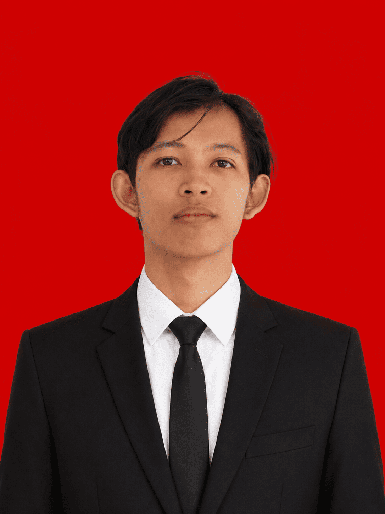

Information Systems graduate (GPA 3.80/4.00) from Universitas Mulawarman with hands-on experience configuring enterprise ERP modules, running quantitative research, and leading university-level student organizations. Ready to bring structured problem-solving to Indonesia's national energy sector.

I am a Bachelor of Computer Science (S.Kom) candidate majoring in Information Systems at Universitas Mulawarman. I completed my thesis defense on May 25, 2026 and am currently awaiting my formal graduation ceremony, expected in September 2026. I bring a combination of technical expertise in enterprise systems (ERP), quantitative analysis, and operational field surveying.
Throughout my academic and early professional career, I have handled multiple ERP implementation cycles for national-scale clients, prepared technical documentation (FRD & CR), executed UAT testing, and chaired the university's student legislative body.
I applied quantitative research methods (SPSS-based statistical testing) to evaluate system satisfaction and usability in my thesis — a skill directly transferable to data-driven evaluation of enterprise digital transformation initiatives.
Ready to contribute actively and available for placement anywhere in Indonesia.
Open to Management Trainee, Officer Development Program, and IT Engineer opportunities — as well as system implementation consulting and project discussions across Indonesia.